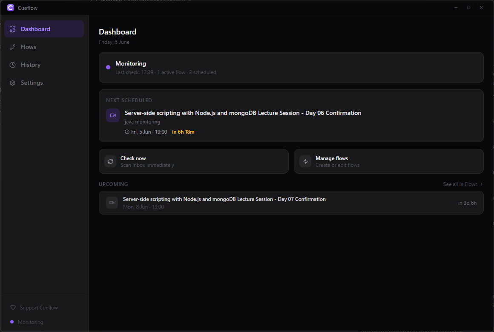
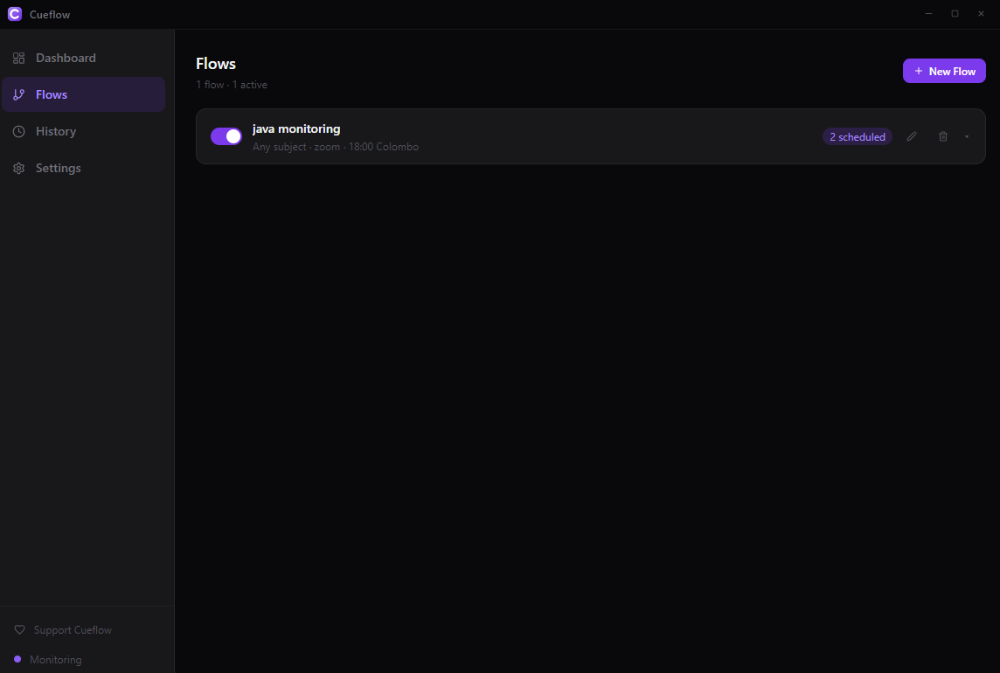
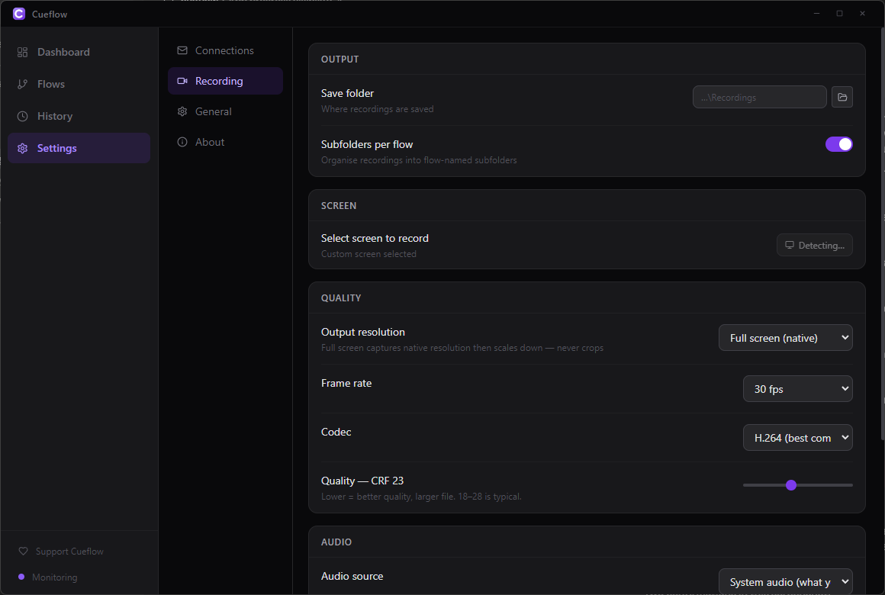
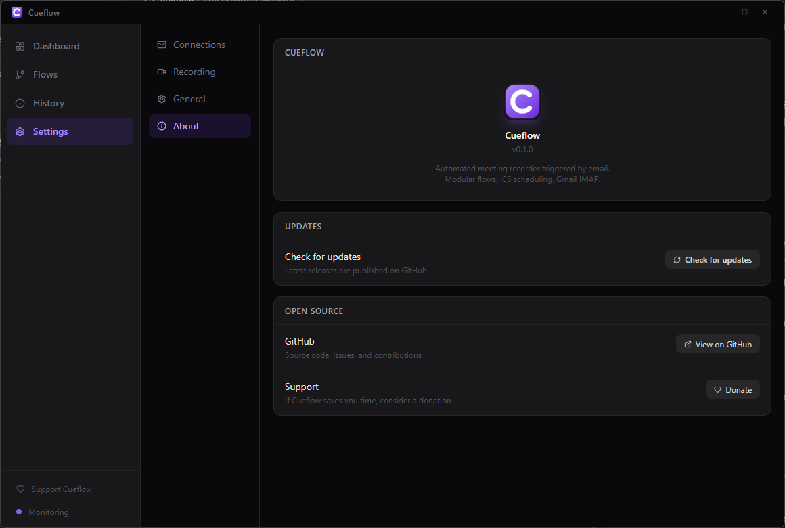

Cueflow watches your Gmail for meeting invitations, then automatically joins and records with OBS — compressing to HEVC in the background. Control everything from Telegram, even from your phone.
Built for students, researchers, and remote workers who can't always be at their desk.

See it in action
Out at dinner when a lecture starts? Paste the meeting link to your Telegram bot — your PC at home opens it, starts recording, compresses the file, and sends it right back when done.
Everything you need
Watches your Gmail inbox over IMAP and detects meeting invitations automatically. No OAuth — just a Google App Password.
Parses ICS attachments and recurring events to schedule recordings days in advance, so nothing slips through.
Bundled OBS captures your screen at full quality — multi-monitor selection, native resolution, CRF quality slider, system audio or mic or both.
After recording, bundled ffmpeg silently re-encodes to x265 in the background. A 70 MB lecture becomes ~1 MB — without visible quality loss.
Live screen switcher during recording — view screenshots, switch capture to another monitor, retry window maximize. Stop recording, get the compressed file, manage flows — all from your phone.
Independent, named automation pipelines with subject/sender filters. Run many in parallel, enable or pause each one from the app or Telegram.
How it works
Paste your address and a Google App Password. Optionally connect a Telegram bot for remote control and file delivery.
Set a subject filter (e.g. your course name) and the meeting type. Cueflow starts watching your inbox and schedules recordings automatically.
When a matching meeting arrives, Cueflow joins it, records with OBS, compresses to HEVC, and delivers the file to your Telegram chat.
A look inside



Telegram bot
Once connected, the bot handles the whole workflow — you never need to be at your PC.
During recording, tap View screens to get a screenshot of every monitor. Switch the capture to a different screen with one tap — OBS hot-switches without restarting.
Cueflow auto-maximizes the meeting window before recording. If a window opened late or on the wrong screen, tap Retry maximize — it finds the window by title across all processes.
When recording is done the compressed file is sent straight to Telegram. If it's under 50 MB it uploads directly; larger files are compressed further first.
Check upcoming sessions, cancel individual recordings, pause or resume flows — all without opening the app. Use /schedule, /flows, /stop and more.
You're notified when compression starts, and again when it finishes — with before/after file sizes. A 45 MB OBS recording becomes 1 MB in seconds while you wait.
Paste any Zoom, Teams, or Google Meet URL directly into the chat — Cueflow opens it and starts recording immediately, no scheduling needed.
Built with
Free, open source, and yours to keep.
Heads up: Cueflow isn't code-signed yet, so Windows SmartScreen may warn about an "unknown publisher." Click More info → Run anyway — the full source is on GitHub if you'd like to verify or build it yourself.